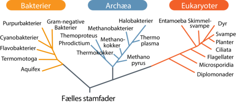

Introduktion:
Ordet evolution i den biologiske verden betyder udvikling igennem generationer af dyr, som leder til forskellige arter med forskellige egenskaber og styrker. Evolution
Evolutionsteorien:
Evolutionsteorien hævder at alle arter af alle dyr alle stammer fra de samme enæggede celler, som igennem generationer har udviklet sig gennem mutationer til at forbedre sine chance for både at leve og for at holde sin arv i live. Evolutionsteorien mener evolution i dyr sker igennem forskellige mekanismer, som alle bidrager til at øge overlevelsen af hver af deres art. Den primære mekanisme er den naturlige selektion, som betyder at den art der er bedst tilpasset til sit miljø, bedst kan skaffe sine ressourcer og, sørge for at reproducere har den bedste chance for at overleve, og holde arven i live. Det er vigtigt for arten at holde en balance mellem at kunne reproducere nok til at arten bliver ved med vedligeholde en betydelig mængde, så chancen for udryddelse er meget lille, men de skal samtidig balancere det med at ens afkom bliver stærke og tilpassede nok til at de kan komme ud i verden, og skal kunne overleve de forskellige forhindringer der vil være igennem deres cyklus. En af de sekundære mekanismer er den seksuelle udvælgelse. Seksuel udvælgelse består af dyr der vælger deres partner, på en række forskellige kriterier. Det er typisk smukhed, styrke eller magen med det største areal. En anden mindre vigtig mekanisme er den genetisk drift som er tilfældelige ændringer i generne som bliver påvirket af ting som drastiske ændringer i populationsmængde, eller voldsomme miljøændringer
Charles Darwin:
Charles Darwin opvoksede i en meget velhavende familie, han læste medicin og teologi, men færdiggjorder aldrig studierne. I stedet tog har på jordomrejse, hvor Darwin indsamlede både planter, mineraler og opbyggede viden om forskellige dyrearter. Under rejsen kom de heriblandt forbi Galápagosøerne, hvor Darwin udforskede det fascinerende dyre- og planteliv.
Darwins finker:
På Galápagosøerne fandt Darwin finker, som alle stammede fra den samme art, men ikke alle stammede fra den samme niche. Finkerne har fløjet ud på øen på et eller andet tidspunkt som på det tidspunkt var ingen fugle boende på øen. Finkerne har herefter udviklet sig til mange forskellige nicher, fordi populationen er voksede, samt konkurrencen bliver større både for at finde føde og en magen. Derfor blev finkerne nødt til at sprede sig ud på andre dele af Galápagosøerne, hvor der så har været andre levevilkår, som har resulteret i, at de skulle udvikle sig til forandringerne. Denne udvikling ville ikke kunne opstå, hvis finkerne var blevet i et stabilt miljø i Sydamerika og ikke fløjet til Galápagosøerne. Men Darwin var ikke opmærksom på de forskellige nicher af finker, og det var først, da han kom hjem fra verdensomsejling, at en af hans kollegaer ledte hans opmærksomhed på forskellen på finkerne.
Hvordan det hele startede
Man mener, at det første liv på jorden var for cirka 3,8 mia. år siden. For at liv vil kunne opstå, har der været nødt til at ske en reaktion, hvor organisk stof er blevet dannet, da alt levende består af organisk stof. Organiske stoffer som RNA, DNA, proteiner, kulhydrater og fedtstoffer er også blevet dannet, hvilket også er nødvendigt for at liv skal kunne opstå. Archaea og bakterier var de første organismer til at eksistere. For cirka 1,7 mia år siden opstod de første dyre- svampe- og planteceller. Ifølge endosymbiont-hypotesen opstod de første eukaryot celler ved at en special bakterie kaldet aerobe bakterie er blevet optaget af en proto-eukaryot celle, hvor bakterien derefter er blevet omdannet til mitokondrier. Herefter har cellen enten optaget nogen fotosyntetiserende bakterier som, har gjort den til en plantecelle ellers har de ikke optaget dem og er blevet til en dyre- eller svampecelle. 1 mia år senere er atmosfærens iltindhold steget med 10% hvilket betød at der kunne blive dannet flercellet organismer da de har brug for mere ilt end encellede. Man kan lave et fylogenetisk træ som viser organismernes afstamning og deres fælles stamfader.
Menneskets udvikling

Mennesket er et medlem af arten homo sapiens som er en del af slægten Homo. Homininerne opdeles i tre forskellige slægter Ardipithecus, Australopithecus og Homo. Ardipithecus og Australopithecus er begge slægte, der i dag er uddøde, Homo-slægten er den eneste af de tre, der stadig lever til den dag i dag. For 6,5 mio. år siden delte vi stamform med chimpanser, hvilket gør os tilnærmelsesvis beslægtet med chimpanser. Mennesket har også haft fælles stamfader til gorillaen og orangutangen, men vi er ikke beslægtet med hverken chimpanser, gorillaer eller orangutanger. Menneskets tidlige fase var begrænset til kontinentet Afrika, men senere hen ved udviklingen af homo-slægten begyndte vi at udbrede os til Europa og Asien. For omkring 2,5 mio. år siden kom en stigende tørke i Østafrika, hvilket satte homininerne under pres. Disse ændrende omgivelser førte homininerne til at udvikle sig i to forskellige retninger. Den første retning udviklede homininer sig en mindre hjerner, men med et kraftigere bid, som gjorde det muligt at indtage meget hård og seje planter. Dette blev så til en understamme af homininen, som vi kalder Australopitheciner, som uddøde cirka 1,5 mio. år senere. Den anden retning udviklede homininer sig en større hjerne, men med et mindre kraftigt bid og denne retning førte til Homo-slægten og senere til arten Homo sapiens.
| Forside |
|---|
| Evolution |
| Metarefleksion |
| Logbog |
| Monkey |